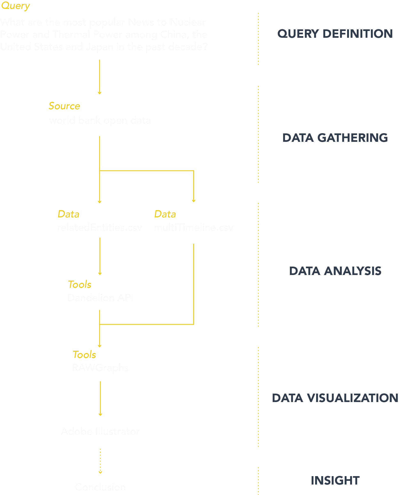

Description
根据问题1中搜集到的与核电有关的 Wikipedia 词条中，我挑选了关联度最高的 25 个词条，并利用这些词条搜集了自 2004 年至今（2019 年 4 月）的谷歌搜索热度趋势，并整理了与之有关的关键词，并对这个时间段内发生的“重大突破”或“重大事故”进行标注。为分析网络社区中人们对核电以及与之相关的信息的反应，我利用语义分析工具，对搜集到的关键词进行了情感分析，并划分了三个维度——“积极的”、“中性的”和“消极的”。最终将这些信息与数据进行整理，形成可视化表达。
Protocol

conclusion
从可视化图表中我们可以看出，与核电关联的信息在 2004 年至 2006 年保持较高的搜索热度，但随着时间推移，热度有所下降。但在 2011 年，相关信息的搜索热度到达顶峰，这是因为，在 2011 年 3 月 11 日，日本福岛核电站发生核泄漏重大事故，造成的影响十分广泛。此事件热度降低后，人们对核电的关注逐渐降低，偶有波澜。另一方面，从关键词我们可以看出，除了部分专有名词为中性词外，消极词汇的数量明显多于积极词汇，这同样意味着，人们对核电的态度并不乐观，甚至略有排斥。